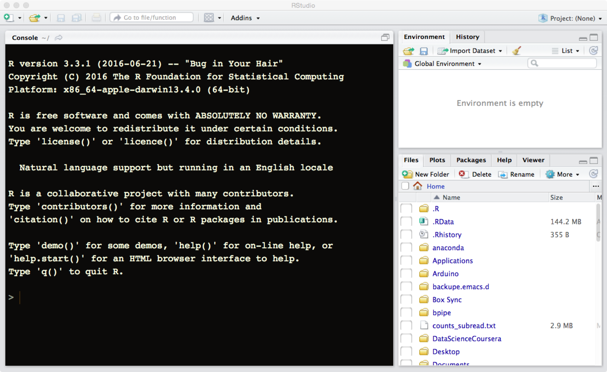

You are not required to have any experience with the R language nor with the software R-studio to follow the course, but to save time and get a smooth start we ask everyone to have the latest version of R and R studio installed on your computer at course start.
For the course we will use the latest version of R and R-studio. Both of these works on computers running Linux, Windows and Macintosh operative systems. R-studio is a set of tools as well as an editor that facilitates the use of R and in many ways create a superior environment to integrate directly with R. Over the last years it has become a very popular tool and in many ways become a de-facto standard for working with R.
Note that on same operative systems it will be easier to install and run R and R-studio if you are administrator of your own computer and hence are allowed to install software on your machine. If you do not have these privileges please ask your system administrator to install the latest version of R and R-studio.
Once you clicked on the “Download R for Windows” you will come to a new web page where you will have a set of options. Click on the first link named “base”. This will take you to the web page entitled “R-3.3.3 for Windows” where you can download the “R-3.3.3-win.exe” that will can be run to install R on your computer.
Once you clicked on the “Download R for Macintosh” you will come to a new web page where you will have a set of options. Unless you have an old version of your operative system you should select the first link named “R-3.3.3.pkg” that will download R to your computer. If you are not sure what version you are running click the apple on the top left of your screen and select “About this mac” (Om den här datorn). In case you are running something older than 10.9, you should instead pick the “R-3.2.1-snowleopard.pkg” to install. Note that this will not give you the latest version of R, but it will be sufficient for most sections of the course.
You can then double-click the downloaded package that will prompt you with some questions for installation details. Stick with the default settings and you should be fine.
Once you clicked on the “Download R for Linux” you will come to a new web page where you can select the linux version you use. On most distributions this will be via a software install system like yum or apt-get. If you run this make sure that you update your information to the installer first, otherwise you might end up installing at outdated version of R. For some systems you might need to install not only r-base, but also r-devel or you will lack important features of your R installation.
Go to the web page rstudio download the installer corresponding to your operative system. Unpack the installer and install the app on a suitable place on your system.
If the installation above went without any problem you should be able to fire up R-studio and see something like the following: 
If you do not see a screen like this one please send an email to thomas.kallman@nbis.se describing the error as well which operative operative system you are running.
To be able to follow in this class we do recommend to use R-studio, but in case it does not fit your needs all the R code we describe will of course work irrespective of the environment that you use. The main benefits of using r-studio is that there are bundled packages with this software that greatly helps for documenting the R-code that you use and write.
While this is NOT absolutely necessary, to be able to get the most from the part of the course that covers explanatory programming, we advise you to have a distribution of LaTeX system installed on your machine so that the R-Studio can call it. Please follow guidelines on LaTeX site
Mac users can follow this link and installation instructions therein.
Some commonly used tools besides R-studio are:
If you are eager to try things out before the course starts the following links goes to some useful material on using R.